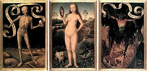

Lembre-se da Morte
Memento Mori é uma expressão latina que significa algo como "lembre-se de que você é mortal", "lembre-se de que você vai morrer" ou traduzido literalmente como "lembre-se da morte". Esta expressão era a saudação utilizada pelos paulianos "Eremitas de Santo Paulo da França" (1620 — 1633), também conhecidos como "Irmãos da Morte". Todas as obras memento mori são produtos da arte cristã. Os anéis memento mori foram manufaturados a partir do fim do século XVI e durante o século XVII.